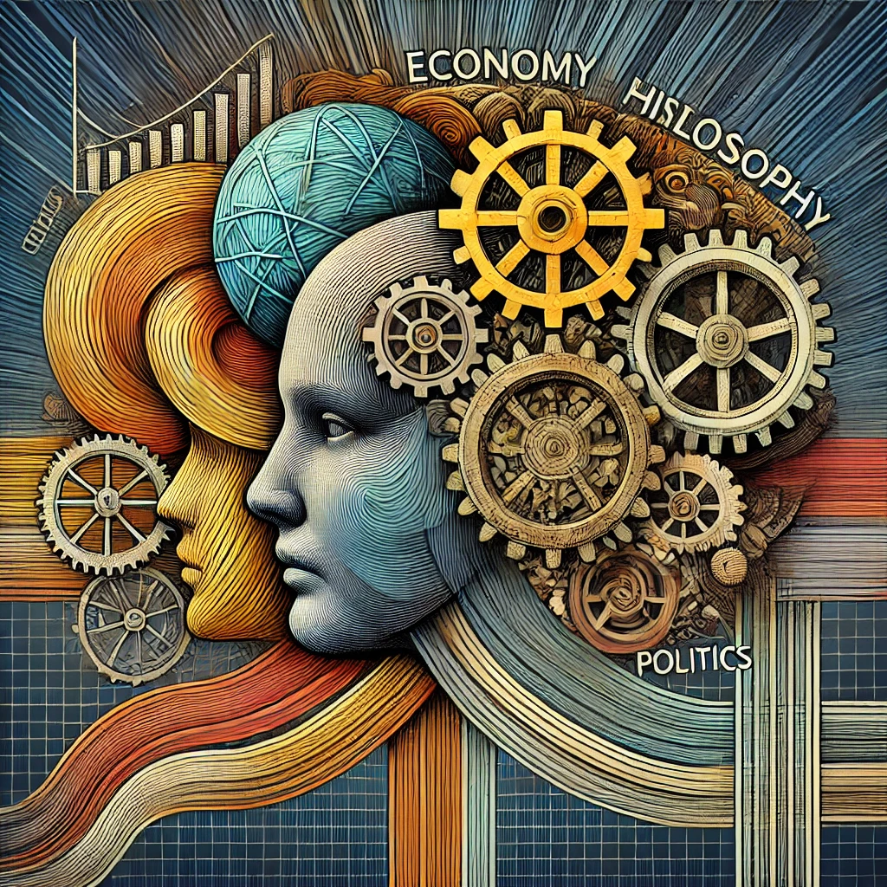

지적 대화를 위한 넓고 얕은 지식
목차
작가
채사장
출판일
2014년
감상평에 대한 AI그림
---나의 감상평----
평소에 정확히 몰랐던 경제용어들이나 철학개념 등을 명확히 알 수 있는 기회가 되었다. 역사에 흐름이 경제의 흐름에 따라 바뀌고 또 경제를 바라보는 시점의 차이로 인해 정치 시스템, 철학적 가치관이 달라질 수도 있다는 점이 흥미로웠고, 나는 어떤 시각을 가져야 할까 고민할 수 있게 하는 책이었다.

감상평에 대한 AI평가
----책의 핵심 메시지와 개인적인 깨달음을 잘 연결해서 표현함-----
✨----경제, 역사, 정치, 철학 간의 상호 연결성을 잘 이해하고 있음------
✨----지식을 수동적으로 받아들이지 않고 적극적으로 고민하며 성찰한 모습이 잘 드러남------
✨----책의 목적에 맞게 스스로의 시각과 고민을 담아냈음------